Getting up and running with your analytics enviroment
Graph Play
Sheet Functionality – Right Click
2 : Creating
a New Database Engine
2.2 :: Load
the Metamodel relationships into the Map Sheet
Other Functionalities
(Optional)
2.3 ::
Generate loading sheets
3 : SPARQL
Queries within SEMOSS
SEMOSS is a data-driven application that enables users to explore relationships and connections in an
interactive format through intermediate conduits, i.e. transitive
relationships.
This document provides general usage instructions and guidance in deployment of the open source
components of SEMOSS, in contrast to the developer guide, which provides
instructions and guidance in terms of development “on top of” the tool.
This document contains:
The SEMOSS user
interface features the main tab to the left, and a workspace that displays the data
outputs in the center of the screen.
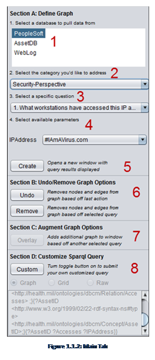There are five default tabs that exist on
the setup pane. The main tab appears when the application is started; the
others (Graph Labels, Graph Cosmetics, SUDOWL, and Graph Filter) can be
toggled.

Figure: 1.1.1
Tabs Overview
The main tab is on the
left once the application is started. It provides the core functionality of
SEMOSS.
The components of
the main tab include:
1. Database
Selection
2. Perspective
Categories
3. Question
Selections
4. Constraints
5. Create
Button
6. Undo/Remove
Button
7. Augment
Graph
8. Custom
SPARQL Query
This is the area
where the active database is selected. The map sheet contains indexes to the
available databases. The map sheet is essentially an index of all of the data
and information that is available within the application (more instructions on
loading databases and the map sheet are contained in Section 2: Loading a
Database).
SEMOSS allows exploration
of data residing in these databases as it is a single database.
This section
contains the available perspectives or different “point of views” of the data
stored in the databases. A perspective allows a user to examine in detail data
from a particular point of view. These details are formulated as questions
pertaining to a specific perspective.
This is where the
specific question is selected to dive into details of a perspective. This
question is translated by SEMOSS into a SPARQL query that will be performed to
provide the answer. Section D describes how an advanced user can create a
custom SPARQL query to provide an ad hoc report.
Sometimes a
question (SPARQL query) requires an input parameter (such as IP Address); in
this case a drop-down box will appear allowing the user to select the
appropriate constraint. Additional information is deferred to the section on
writing SPARQL queries
This button executes
the constructed SPARQL query and displays the result either as a graph or as a
grid.
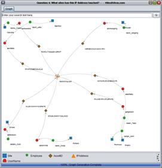
Figure 1.1.3:
Example Graph Query
The undo button undoes
the last action the user has taken. The first time the button is pressed, it
removes relevant properties. The second time it is pressed, it removes nodes
from the graph. Consequently, to completely undo the prior action, this button needs to be pressed twice.
The augment graph function
allows the user to overlay components of an additional query onto a graph. This
is useful when comparing connections between two comparative objects.
Editor’s Note: Additional Analysis
surrounding creating SPARQL queries in SEMOSS is deferred to the ‘Writing SPARQL
Queries in SEMOSS’ Section.
This component,
when the ‘Custom’ button is toggled, allows the user to (a) modify the current
SPARQL query and (b) change the type of play sheet that the data is displayed
on. Not all query types are able to be
displayed on all play sheet types, so slight query modifications are often
required in order to change the play sheet.
Further information about the play sheets can be found in the
Developer’s Guide.
The graph labels
tab allows the user to customize the labels and tooltips that are displayed on
a graph. Toggling the select button for an item on or off will determine
whether it is displayed. The label toggle displays the information on the graph
and the tooltip displays information on a mouse-over event. Edges and nodes can
both have labels attached to them. Various options exist, including the ability
to display the instance name, the node type, and the URI of the node.
The graph cosmetics
tab allows the user to modify the color and shape of a given node in the
database. Selecting the first instance for a given node (the Select All
Instance) allows a user to modify all of the instances of that node type.
Default shapes and colors for a given node type can be set in the map sheet
(more information is located in the database setup section of the manual).
The graph filter
tab allows the user to toggle the display of various nodes within the graph.
Again, selecting the first instance of a given node (the select all instance)
toggles all of the instances associated with a given node type.
In the middle of
the filter tab is a properties window that displays the properties associated
with a given node instance or edge. This is useful in exploration of properties
attached to a given node.
The bottom section
of the filter tab contains the ability to filter the graph for various
relationships or verbs within the graph. Again, selecting the first instance of
a given relation (the select all instance) toggles all of the relations
associated with a given node.
The SUDOWL tab
allows the user to explore the graph in the display pane without the presence of
a metamodel. The property column describes each of
the relationships that are displayed.
When the ‘create’
button is toggled and a graph is created, a window within the display pane
appears showing either a graph or a grid sheet. These sheets are where the
insights are generated for future analysis.
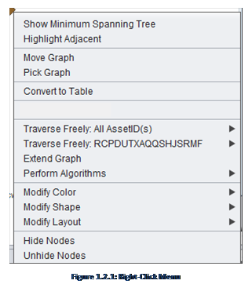The graph play sheet has a number of ways to
manipulate a graph after it is created, most of which are accessible from the
right click menu. It is important to
note that the right click functionality is highly dependent on whether or not a
node or a group of nodes is selected as well as which node(s) is selected.
This feature
essentially determines the minimum amount of edges necessary to connect all of
the vertices of the graph. This
functionality is useful in identification of redundancies within the network.
This feature
highlights all of the nodes that are adjacent to a selected node. This can be
useful in identification of connections in a cluttered graph.
Move graph allows
the user to move the whole graph as a single image about the canvas. To revert
back to the default selection after a graph is moved to the preferred location,
select the pick graph mode.
Pick Graph allows
the user to select specific nodes on the graph and move them about the canvas.
This option is the default selection when the tool is opened.
This feature creates
a table of all of the triples that are currently being used to display the
graph.
This feature allows
the user to extend the graph from the selected node(s) to any of the node types
that are upstream or downstream of it (them). This will connect all nodes of the same type to their respective node instances.
This feature allows
the user to connect to various upstream and downstream nodes that are connected
to this particular instance in the RDF store. This will connect only the
selected instance to its respective node instances.
Extend
graph allows the user to add in additional components based on a given set of
constraints.
Various algorithms
are included in the initial open source version of SEMOSS. These algorithms
provide insights into various components of the graph. Currently the following
algorithms are included:
·
NodeRank Algorithm: Ranks
the nodes based on the number of times the node is referenced/used.
·
Distance Downstream: Provides the number of
‘hops’ downstream data travels across systems.
·
Loop Identifier: Identifies instances where
certain data is sent to and from the same system.
·
Island Identifier: Identifies instances where
the flow of a data object is interrupted. In other words, islands of data
exist. In some cases this could be a requirement. In others this could
highlight areas of data management issues.
·
Data Latency Analysis: Allows user to manually
adjust the time bar to track data through the network of systems.
·
Data Latency Scenario: Automatically distributes
the data based on the data frequency of interfaces.
Similar to the
Graph cosmetics tab, this function allows the user to customize the shape of
the particular selected instance(s).
Similar to the
Graph cosmetics tab, this function allows the user to customize the color of
the particular selected instance(s).
This feature allows
the user to select the graph layout. Various graph layouts may be useful for
various purposes and all graphs are force-directed layout algorithms. The tree
layout will work so long as there are no loops within the graph.
Hide Nodes allows
the user to hide the selected instance on the graph. This is similar to the
graph filter tab.
While not as robust
as the graph sheet functionality, there are additional capabilities within the
graph sheet.
Selecting a column
header will allow the user to sort the graph alphabetically or numerically,
depending on what type of data is present in the column. Clicking again will reverse the order.
To copy and paste
from a grid sheet to an Excel workbook, press Ctrl +A then Ctrl + C to select and
copy all objects in the table. The data
can then be paste in Excel using the right-click or Ctrl + V.
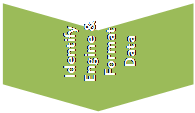 This is the set of steps that must be completed in order to
create a new database engine and to load new data to the engine from Excel. Note
that some of these steps may be done simultaneously, but all of the steps must be
completed to create a fully functional engine.
There are other ways to create an engine and connect it to a data store,
but this is the easiest way, assuming that the data is not already structured
and formatted.
This is the set of steps that must be completed in order to
create a new database engine and to load new data to the engine from Excel. Note
that some of these steps may be done simultaneously, but all of the steps must be
completed to create a fully functional engine.
There are other ways to create an engine and connect it to a data store,
but this is the easiest way, assuming that the data is not already structured
and formatted.
1.
Identify and understand the data and the
relationships within the data.
2.
Develop the metamodel
3.
Load the metamodel objects
and their relationships into SEMOSS’s properties sheet
4.
Identify the engine used to generate the
database
a.
If using big data engine, develop the
excel-based loading sheets and set up the reader
5.
Load the loading sheets and generate the
database
6.
Create and maintain the questions sheet
A tutorial video can be accessed at this link depicting how
to create a new database engine: http://www.youtube.com/watch?v=rY1aOGH7VU4.
The creation of a metamodel involves
the construction of concepts (data) and their relationships (how data pieces
relate to each other) and consequently provides analysts with a framework
through which to explore the database and identify meaningful insights.
Usually, the metamodel is displayed as a map, as
shown below for our security database in Figure 2.1.1.
Development of the metamodel is one
of the most important and complex tasks that needs
to be completed in order to be able to efficiently and effectively extract data
from the engine. If the metamodel is not thorough,
straightforward, and comprehensive, it will be very difficult to extract
insights from any set of data. The most important paradigm to consider is that
the metamodel should be constructed based on the fundamental relationships between the data, as opposed to a structure that is
based on answering specific, known,
questions from the data. This allows the database to be queried based on
prospective insights (as opposed to modifying the database to allow for this to
happen).
Figure 2.1.1 below contains the base metamodel
for our sample security database. The metamodel is
constructed such that each of the node types and its relationships with other
node types is represented by boxes and lines.
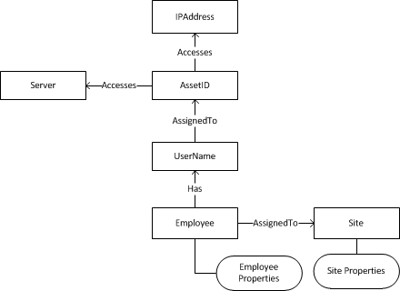
Figure 2.1.1: Security Database Metamodel
Note: This section
only applies if loading from an Excel loading sheet.
Once the metamodel is created, the
base objects and relationships must be loaded into the RDF map sheet, named in
the initial open-source release RDF_Map.prop. This step ensures that the data loads
successfully and correctly aligns with the previously designed metamodel.
Note that all components are
case sensitive. Therefore case must be consistent across all instances for
matches to work correctly.
Here all of the base objects are added (i.e. the individual
nodes in the metamodel that represent a node type
within SEMOSS).
First, Navigate to the ##Base Objects## Section of the map
sheet.
Then, for each new base object (e.g. type AssetID) enter the name, tab over, and enter the URI for
the base object. The base objects for the security database (based on the metamodel identified above) would be:
##Base Objects##
AssetID http://Sdb.com/ontologies/Concept/AssetID
IPAddress http://Sdb.com/ontologies/Concept/IPAddress
UserName http://Sdb.com/ontologies/Concept/UserName
Employee http://Sdb.com/ontologies/Concept/Employee
Server http://Sdb.com/ontologies/Concept/Server
Site http://Sdb.com/ontologies/Concept/Site
Here the relationships that exist in the metamodel
are added.
First, navigate to the ##Base Predicates## Section of the
prop sheet.
Then, for each predicate (e.g. UserName_AssignedTo_AssetID)
enter the name, tab over, and enter the URI for the relation. The base objects
for the security database (based on the metamodel
identified above) would be:
##Base Predicates##
AssetID_Accesses_IPAddress http://Sdb.com/ontologies/Relation/Accesses
UserName_AssignedTo_AssetID http://Sdb.com/ontologies/Relation/AssignedTo
Employee_Has_UserName http://Sdb.com/ontologies/Relation/Has
Employee_AssignedTo_Site http://Sdb.com/ontologies/Relation/AssignedTo
AssetID_Accesses_Server http://Sdb.com/ontologies/Relation/Accesses
For each of the new node types and verbs, the base
relationship is added to denote what type of object it is. For this first
component, BaseMetaRelationships, all of the nodes
that are of type concept (i.e. a node) are added. The structure is such that
the node types in question (http://Sdb.com/ontologies/Concept/IPAddress) are
first, the standards-based predicate (http://www.w3.org/2000/01/rdf-schema#subClassOf)
to denote the subclass is second, and the class (http://Sdb.com/ontologies/Concept)
is the final component. In our example, the addition of all of the base meta relationships necessary to create the security database
are shown.
BaseMetaRelationships=http://Sdb.com/ontologies/Concept+http://www.w3.org/1999/02/22-rdf-syntax-ns#type+http://www.w3.org/2000/01/rdf-schema#Class;http://Sdb.com/ontologies/Concept/AssetID+http://www.w3.org/2000/01/rdf-schema#subClassOf+http://Sdb.com/ontologies/Concept;http://Sdb.com/ontologies/Concept/IPAddress+http://www.w3.org/2000/01/rdf-schema#subClassOf+http://Sdb.com/ontologies/Concept;http://Sdb.com/ontologies/Concept/UserName+http://www.w3.org/2000/01/rdf-schema#subClassOf+http://Sdb.com/ontologies/Concept;http://Sdb.com/ontologies/Concept/Employee+http://www.w3.org/2000/01/rdf-schema#subClassOf+http://Sdb.com/ontologies/Concept;http://Sdb.com/ontologies/Concept/Site+http://www.w3.org/2000/01/rdf-schema#subClassOf+http://Sdb.com/ontologies/Concept;
http://Sdb.com/ontologies/Concept/Server+http://www.w3.org/2000/01/rdf-schema#subClassOf+http://Sdb.com/ontologies/Concept;
The same task is then completed for BaseMetaProperties,
thus, each of the new relationships is loaded into the prop sheets. The
structure is such that the node types in question (http://Sdb.com/ontologies/Relation/AssignedTo)
are first, the standards-based predicate (http://www.w3.org/2000/01/rdf-schema#subPropertyOf)
to denote the subclass is second, and the property (http://Sdb.com/ontologies/Relation)
is the final component. This is the example for the security database:
BaseMetaProperties=http://Sdb.com/ontologies/Relation+http://www.w3.org/1999/02/22-rdf-syntax-ns#type+http://www.w3.org/1999/02/22-rdf-syntax-ns#Property;
http://Sdb.com/ontologies/Relation/AssignedTo+http://www.w3.org/2000/01/rdf-schema#subPropertyOf+http://Sdb.com/ontologies/Relation;http://Sdb.com/ontologies/Relation/Accesses+http://www.w3.org/2000/01/rdf-schema#subPropertyOf+http://Sdb.com/ontologies/Relation;
http://Sdb.com/ontologies/Relation/Has+http://www.w3.org/2000/01/rdf-schema#subPropertyOf+http://Sdb.com/ontologies/Relation;
The final task that needs to be completed is the engine
setup. Completion of this step requires a decision to be made in identification
of the engine to be used and creation of the questions sheet; explanation of
this process is deferred to their respective process step sections. The code that needs to be added simply specifies the engine and database locations that are used to
setup the database to be shown, so once decided, this can be added.
At the top of the prop sheet, modify it such that the engine
and locations are selected. Consider this example for the security database. The
first component specifies the databases that are loaded; multiple databases can
be loaded and are delimited by semicolons. The second component is the engine
used to read the database, the third is the prop sheet location (more on the
prop sheet in future steps), and the final sheet is the questions sheet.
ENGINES Security
Security prerna.rdf.engine.impl.BigDataEngine
Security_PROP db/demo/Security.properties
Security_DREAMER questions/Security_Questions.properties
Other functionalities in the prop sheet can be added,
included entering default colors and shapes for nodes. The base colors for the
security database are entered as below:
#Shape maps
Site_SHAPE SQUARE
IPAddress_SHAPE TRIANGLE
UserName_SHAPE HEXAGON
AssetID_SHAPE DIAMOND
Employee_SHAPE CIRCLE
#Shape
Colors
Site_COLOR BLUE
IPAddress_COLOR ORANGE
UserName_COLOR RED
AssetID_COLOR BROWN
Employee_COLOR GREEN
Selecting the engine defines the process through which the
database is read into SEMOSS. This
manual documents the use of the Big Data Engine, which provides the added
functionality of converting Excel-based inputs into the database.
The loading sheets are setup such that there is an
introductory loader tab, and a tab that contains an individual set of triples
(e.g. all of the AssetID to IP Address
relationships).
The Loader tab
essentially contains the name of the sheets that are read into the database.
The name of the tab must be “Loader”, and adjacent in column B to each of the
tabs that are loaded should be the text “Usual.” Cell A1 should contain the
text “SheetName” and Cell B1 must contain the text
“Type.” The tab should be constructed as follows (example for the security
database):

Figure 2.3.1: Loader Tab
The other tabs should individually contain specific
information surrounding an individual triple store that is to be loaded into
the database. For example, <UserName><AssignedTo><AssetID>.
Cell A1 should contain the text “Relation”, Cell A2 should contain the predicate
(AssignedTo in this case), Cell B1 should contain the
first node type (e.g. UserName), and cell C1 should
contain the second node type (e.g. AssetID). Column B
should contain the actual first node instances, and column C should contain the
second node instances. Properties on the edges (e.g. not triples, but data that
may be relevant as a property such as a cost) can be attached in adjacent
columns. Note that the property is not added to the node, but rather, the edge.
To add properties to nodes a separate type of sheet is required (as documented
below). Properties do not need to be added in the prop sheet, but are more
difficult to visualize and query (example shown in figure 2.3.2 for the
security database).
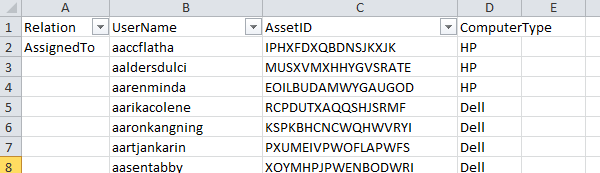
Figure 2.3.2: Sample Triple Loading Sheet
In the case where a property is desired to be added onto a
node as opposed to a node edge (as above), a separate
tab is necessary to be created to show this information. The structure of the
sheet is displayed below for the Site property sheet for the security database,
where city and state are denoted as properties of an individual site name.
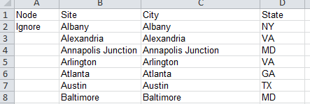
Figure 2.3.3: Sample Property Loading Sheet
Once the excel files are generated, the database needs to be
created.
There are two options to create a database: using the user
interface import functionality or using the POIReader
java file (POIReader is explained in the developer
guide). The user interface is somewhat more intuitive, and does not require
manual modification of the java code. However, it is not as efficient in
processing multiple workbooks or debugging potential loading sheet data issues.
When updating a
database (i.e. modifying the data in a current data), the best mechanism to
ensure that duplicates do not exist is to delete the old .jnl
file and then reload all of the new loading sheets from the workspace. This
process tends to lend itself better to POIReader than
the UI update.
The user interface on the DB Modification Tab provides the
capability to generate a new database engine without having to process through
code. However, it is difficult to debug loading sheets with errors in the UI
Import, and does not streamline the import of multiple files simultaneously.
Within the user interface import, there are two options: add
to existing database, and create a new database
This option will load all triples specified in the Excel
workbook on top of an already running database. Nothing will be overwritten in
the previously existing database. If an exact triple specified in the workbook
already exists in the database, the triple will remain but will not be
duplicated (in this instance, <Subject>, <Predicate> and
<Object> all must match).
The database to be augmented must be selected in the
database selection main tab on the left.
This option will create a completely new database and
automatically have it populated on the left panel. The name of the new database
cannot contain any spaces. All objects types and predicate types must be
contained in the Base Objects and Base Predicates of the map file. The map file
cannot be open when the import is running.
The files that are created (Assuming that the inputted name
is “NewDBName”):
1. <NewDBName>BigDataProp.properties. This prop file will be created in
the db folder; It specifies
all of the Big Data Engine properties.
2. <NewDBName>.jnl. This file will be created in the db
folder and is the triple store with all of the new created triples.
3. <NewDBName>_Questions.properties. This file will be created in the
questions folder. It specifies what perspectives, questions, and associated
queries are populated when the new engine is selected. It uses the basic
default question sheet, and provides the user with the capability to add in
additional questions on top of this database.
In addition, the map sheet is edited directly in the project
folder to contain the new databases such that when the new db
is created, it will appear in the navigation menu.
The questions sheet contains the base SPARQL queries that
can be queried out of the box by SEMOSS.
The question sheet contains the queries that are specific to
the database. Below the question sheet for the security database is explored.
Note that the bottom components of other question sheets should be pulled
through when creating new question sheets to permit functionalities such as
traverse freely.
If using POIReader to create a new
database, the question sheet must be created manually. If using the UI import,
the question sheet will be created automatically using a base subset of
“generic” questions.
First, the available perspectives are denoted. Perspectives
are essentially a grouping of questions. The generic perspective is included as
a base in a question sheet, and the security perspective in this case is
specific to our security database, and provides queries specific to the
database.
PERSPECTIVE Generic-Perspective;Security-Perspective
Next, the questions within each perspective are denoted, as
shown below, there are four questions for the generic perspective (GQ1 through
GQ4) and six base questions for the security perspective (SQ1 to SQ6).
Generic-Perspective GQ1;GQ2;GQ3;GQ4
Security-Perspective SQ1;SQ2;SQ3;SQ4;SQ5;SQ6
Next, the text of the questions is denoted for the user to
select when the query is selected. The Questions for the security database are
denoted below, and this output in the tool is denoted in figure 2.5.1.
SQ1 What workstations have accessed this
IP address?
SQ2 What IP addresses has this
workstation accessed?
SQ3 What IP addresses has this Employee accessed?
SQ4 What IP addresses have touched this site?
SQ5 What employees are located at this
site?
SQ6 What sites has this IP Address
touched?

Figure 2.5.1: Question Selection
Finally, the text of the individual queries is denoted. A
stock query requires two components, first the specification of the layout
(e.g. graph or grid play sheet) and then the actual query text. Consider the
SQ1 Query (What Workstations have accessed this IP Address?).
SQ1_LAYOUT prerna.ui.components.GraphPlaySheet
SQ1_QUERY CONSTRUCT {?AssetID ?Accesses ?IPAddress}
WHERE {{?IPAddress
<http://www.w3.org/2000/01/rdf-schema#label> "@IPAddress-IPAddress@";}{?IPAddress
<http://www.w3.org/1999/02/22-rdf-syntax-ns#type> <http://Sdb.com/ontologies/Concept/IPAddress>;}{?Accesses
<http://www.w3.org/2000/01/rdf-schema#subPropertyOf> <http://Sdb.com/ontologies/Relation/Accesses>
;}{?AssetID
<http://www.w3.org/1999/02/22-rdf-syntax-ns#type> <http://Sdb.com/ontologies/Concept/AssetID>;}{?AssetID
?Accesses ?IPAddress}}
Note that the play sheet specific for a grid (i.e. table-based) sheet is:
SQ1_LAYOUT prerna.ui.components.GridPlaySheet
In addition, grid queries begin with SELECT as opposed to
CONSTRUCT.
Additional information and guidance surrounding creating
SPARQL queries within SEMOSS is deferred to the SPARQL Queries within SEMOSS
section.
SPARQL is the query language used to query different
databases within SEMOSS. Querying in SPARQL is a means of retrieving or
creating meaningful data from an RDF triple store.
This document does not
provide in-depth guidance in generating SPARQL queries, for additional
guidance, it is suggested to purchase Learning
SPRAQL by Bob DuCharme. More information can be
found at www.learningsparql.com,
and the book can be purchased on Amazon here.
More information can be found at www.SEMOSS.org.
In the semantics-based RDF ontology, this high-level
framework provides the context through which data is structured. The Resource
Description Framework (RDF) is a data model for encoding, gathering, and
representing information about resources. Elements in RDF are stored as Uniform
Resource Identifiers (URIs) and are always part of a triple. Constructed like a
sentence (with a subject, predicate, and object) the triple structure is
relational in form. A triple is defined as <Subject> <Predicate>
<Object> where “< >” denotes a URI. For example, an Employee has a UserName (constructed as <Employee><Has><UserName>. These categories (e.g. Employee) are called
types, which contain specific instances (e.g. John Smith). Thus, John Smith has
J_Smith, or, <John Smith> <John Smith:J_Smith><J_Smith>.
There are multiple types of queries available to SPARQL,
however only the SELECT (which results in grids) and CONSTRUCT (which results
in graphs) queries are used.
A query has three major parts: The Query Type (SELECT or
CONSTRUCT), the return variables (what is to be returned from the query), and
the pattern that the triples must follow, in other words as structured:
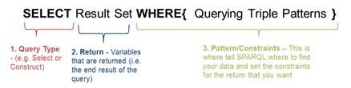
To query the database it is important to note the URI
(Uniform Resource Index) of the particular types(s) that are to be queried. The
query below is a simple query for the Security database, which traverses from
the Asset ID to IP Address, based on a specified IP Address. This query would
be used to identify what assets (computers) have visited a particular website,
in identification of the cause of a particular virus. Additionally, the user
can then extend from that particular object (traverse freely) through to other
nodes to identify additional insights. This is performed by right clicking on
the node in question and traversing to the desired additional node.
Here, a CONSTRUCT
query is used because a graph is generated. Second, since only one relationship
is traversed, from AccessID to IP Address, the result
set is:
{?AssetID
?Accesses ?IPAddress}
Next, the patterns to be traversed are added. First, the
components the user will select are added (denoted by two variables
encapsulated by ‘@’ signs:
{{?IPAddress
<http://www.w3.org/2000/01/rdf-schema#label> "@IPAddress-IPAddress@";}
Then, the URIs of the types to be traversed are added. It is populated with the URI’s of the components.
The URIs are found in the mapping file and are thus
added.
{?IPAddress
<http://www.w3.org/1999/02/22-rdf-syntax-ns#type> <http://Sdb.com/ontologies/Concept/IPAddress>;}{?Accesses
<http://www.w3.org/2000/01/rdf-schema#subPropertyOf> <http://Sdb.com/ontologies/Relation/Accesses>
;}{?AssetID
<http://www.w3.org/1999/02/22-rdf-syntax-ns#type> <http://Sdb.com/ontologies/Concept/AssetID>;}
Finally, the core relationship is added:
{?AssetID
?Accesses ?IPAddress}}
Thus, the completed query is generated and loaded into the
question sheet:
CONSTRUCT {?AssetID ?Accesses ?IPAddress} WHERE {{?IPAddress
<http://www.w3.org/2000/01/rdf-schema#label> "@IPAddress-IPAddress@";}{?IPAddress <http://www.w3.org/1999/02/22-rdf-syntax-ns#type>
<http://Sdb.com/ontologies/Concept/IPAddress>;}{?Accesses
<http://www.w3.org/2000/01/rdf-schema#subPropertyOf> <http://Sdb.com/ontologies/Relation/Accesses>
;}{?AssetID
<http://www.w3.org/1999/02/22-rdf-syntax-ns#type> <http://Sdb.com/ontologies/Concept/AssetID>;}{?AssetID
?Accesses ?IPAddress}}
Again, this document
does not include extensive SPARQL instructions or details. Additional
documentation surrounding writing SPARQL queries can be found at SEMOSS.org and
through Bob DuCharme’s book, Learning
SPARQL.
The Security use-case example is meant to show how a network
security analyst can identify meaningful insights surrounding a potential
network infiltration by a malicious host. The scenario envisioned is that an
employee likely visited a malicious website and that site infected the
computer, and then a number of servers that support the enterprise. The
security analyst is interested in identifying the employee that went to the
site, and identifying the potential impact to the enterprise of the malicious
traffic.
The team has also generated a Youtube
video discussing the
concept (4.1) surrounding the security database as well as the actual use-case of
traversing through the videos in the application.
Like most enterprises this data is located in disparate,
disconnected data sets. Likely, there is a PeopleSoft Oracle solution which
manages HR information for the company, an active-directory based asset
database that contains all of the assets connected to the enterprise, and a web
traffic log provided by the network support team. These databases are likely
disconnected, and on-face, do not communicate with each other. In order to
identify information about the security breach, however, these databases will
need to communicate to connect information surrounding the attack.
Figure 4.1.1: Disparate Databases
The SEMOSS team has extracted specific, relevant components
from these databases and generated a metamodel (more
information surrounding metamodels can be found in section
2.1). However, this data is unfiltered
and it must be processed and connected in SEMOSS for actionable insights to be
generated. The Security metamodel is located in figure
4.1.2 below. Essentially, the three disparate databases are connected through
the metamodel and can be combined to generate
insights surrounding the attack that occurred.

Figure 4.1.2: Security Database Metamodel
Traversing through the database is relatively
straightforward. Let’s imagine that the IP Address is known (for our demo we
have used IAmAVirus.Com), and we want to identify insights surrounding what
employees have accessed this host.
First select the (1) WebLog database
(since the initial connection surrounds web traffic), then select the (2) Security Perspective, and then select a
(3) Specific Question. In this case,
the analyst is interested in identifying what workstations (assets) have
accessed the particular IP Address.

Figure 4.2.1: Database Selection
Once the query is created, the available parameters are
selected, in this case the IP Address, and then the create button is pressed to
generate the initial graph (figure 4.2.2 below).
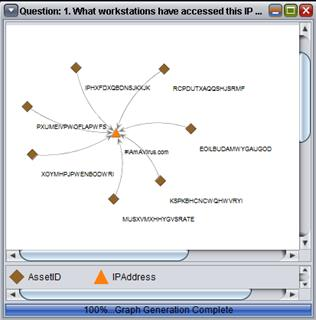
Figure 4.2.2: Workstation-IP Address Query
Now, all of the workstation assets that have accessed that
particular IP address have been identified. Next, the analyst might be
interested in the usernames associated with those particular asset identifiers.
By first selecting the database to traverse to (e.g. the Asset Database) and
then by right clicking on the individual node in question, the user can traverse
to another node. In this case, the analyst will traverse through to username
(figure 4.2.4 below). Now, the graph shows the usernames associated with the
assets that have been compromised.
 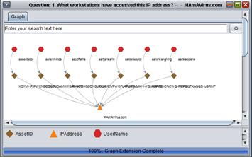
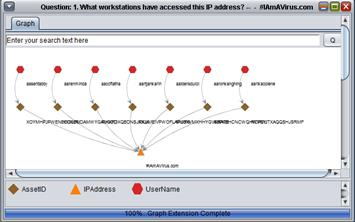
Figure 4.2.3 & 4.2.4:
Right-click menu and tree node showing IP Address-Workstation-UserName
Next, the user may be
interested in identifying the names of the employees involved, so by switching
to the PeopleSoft database perspective the analyst can traverse through to this
question. Next, the user may be interested in where these individuals are
located (perhaps the security breach has occurred at a specific location), so
the user can traverse through to these locations to identify the specific area
where the breach has occurred (as in figure 4.2.5 below).
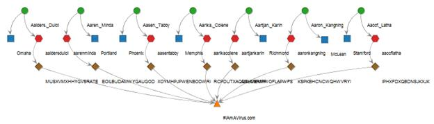
Figure 4.2.5: Tree View
showing Security problem
Finally, the analyst may be
interested in what servers those assets have accessed, so by switching back to
the traffic log, the user can traverse through to server. In addition,
highlight adjacent functionality can be used to identify the specific nodes
that a particular instance touches; in this case, it appears as if a particular
asset has touched an extraordinary amount of servers; possibly suggesting that that
particular asset has infected the entire enterprise (as below).
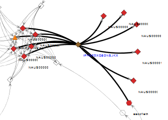
Figure 4.2.6: Traverse
Freely to identify malicuous host and highlight adjacent
Through this analysis, we
have identified that this particular user has likely gone to a malicious
website, identified the party respinsible, as well as all of the servers this
particular user has touched to identify what actions need to be taken to reduce
the impact to the enterprise. In addition, this analysis has been performed by
merging three separate, disparate databases that ordinarily would not
communicate with each other.
Additional Information surrounding SEMOSS is located here:
SEMOSS Blog
SEMOSS Youtube Channel: http://www.youtube.com/SEMOSSAnalytics
SEMOSS Use Case and Demo Videos
Security
Overview: http://www.youtube.com/watch?v=J5ruShx4eso
Security Demo: http://www.youtube.com/watch?v=1xRlCzI7yjc
Creating a Database in SEMOSS: http://www.youtube.com/watch?v=rY1aOGH7VU4
SEMOSS Develop Guide
SEMOSS is an open source joint effort between Deloitte
Consulting LLP and the Military Health System.
About Deloitte
Deloitte refers to one or more of Deloitte Touche Tohmatsu Limited, a UK private company limited by
guarantee, and its network of member firms, each of which is a legally separate
and independent entity. Please see www.deloitte.com/about for a detailed description
of the legal structure of Deloitte Touche Tohmatsu
Limited and its member firms.
Deloitte provides audit, tax, consulting, and financial
advisory services to public and private clients spanning multiple industries.
With a globally connected network of member firms in more than 150 countries,
Deloitte brings world-class capabilities and high-quality service to clients,
delivering the insights they need to address their most complex business
challenges. Deloitte has in the region of 200,000 professionals, all committed
to becoming the standard of excellence.
This communication contains general information only, and
none of Deloitte Touche Tohmatsu Limited, its member
firms, or their related entities (collectively, the “Deloitte Network”) is, by
means of this publication, rendering professional advice or services. Before
making any decision or taking any action that may affect your finances or your
business, you should consult a qualified professional adviser. No entity in the
Deloitte Network shall be responsible for any loss whatsoever sustained by any
person who relies on this communication.
© 2013. For information, contact
Deloitte Touche Tohmatsu Limited.
About MHS
America’s Military Health System (MHS) is a unique
partnership of medical educators, medical researchers, and health care
providers and their support personnel worldwide. It is prepared to respond
anytime, anywhere with comprehensive medical capability to military operations,
natural disasters and humanitarian crises around the globe, and to ensure
delivery of world-class health care to all DoD service members, retirees, and their families.
The MHS promotes a fit, healthy and protected force by reducing non-combat losses,
optimizing healthy behavior and physical performance, and providing casualty
care.
Please see www.health.mil for additional information on the
MHS.